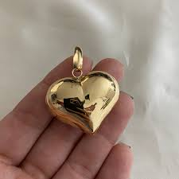

Decidiste confiar en Valeria...
Un sentimiento inesperado
Valeria llevó a Paco a un rincón apartado del jardín. Allí le habló del verdadero tesoro de Rico McPato: no se trataba solo de oro o monedas antiguas, sino de una gema legendaria conocida como el Corazón Dorado.

Según ella, esa gema tenía el poder de asegurar fortuna eterna a quien la poseyera.
—Pero alguien quiere robarla —susurró Valeria—. Y yo necesito tu ayuda.
Paco la miró a los ojos y sintió algo que nunca había experimentado antes. ¿Era amor? ¿O simplemente estaba siendo manipulado?
Debía elegir entre su corazón y su lealtad familiar.